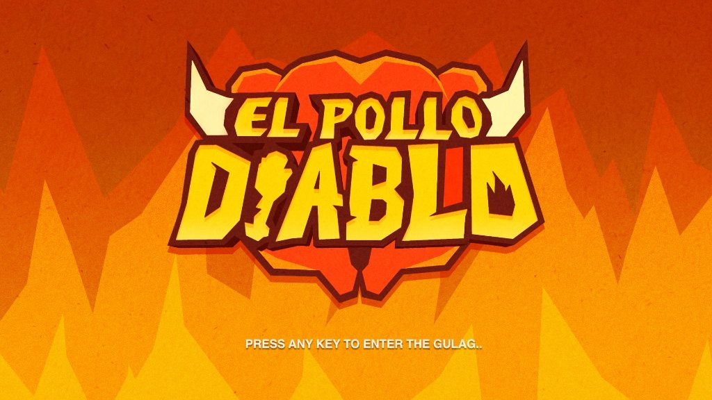

1. Project Vision
Named after the legendary mutant chicken myth in The Curse of Monkey Island, El Pollo Diablo is a 2D side-scrolling combat demonstration. Bypassing traditional platforming sequences entirely, the game focuses on technical systems engineering and combat design across two modes:
1. Single-Player Boss Fight Mode
The player controls the Prisoner, fighting a campaign against the AI-controlled mutant chicken boss (El Pollo Diablo), whose complex attack behaviors are governed by a 12-state Finite State Machine (FSM).
2. Local Asymmetric Multiplayer Mode
A PvP match where Player 1 controls the agile, melee-focused Prisoner (utilizing a throwable boomerang), and Player 2 takes direct, hardware-routed control of the massive boss chicken, utilizing charge attacks, slams, and minion spawns.
Developing a single, decoupled codebase capable of handling both modes—integrating AI decision trees, routing distinct hardware maps, and balancing asymmetric combat—was the main engineering challenge of this project.
2. Technical Architecture & Module Structure
The architecture utilizes Unity’s modular component model, extended with custom decoupled modules, custom state machines, and event-driven patterns to handle cross-system coordination without circular references.
Player Systems
- Input Routing
- Locomotion & Jump
- Dash Module
- Melee Controller
- Throwable Weapon Broker
- Status Effect Registry
- Physics Translation Module
Boss AI & Attack Modules
- StateController (FSM)
- Target Acquisition
- BaseAttack Interface
- ChargeAttack Module [Teammate]
- LevitateAttack Module [Teammate]
- GroundSlam Module [Teammate]
- HeadAttack Module [Teammate]
- Boss Controller Broker
- Hitbox Overlap Solvers
Shared Core Systems
- Decoupled Health Model
- Health Utility Extensions
- Collision Matrix Layers
- Dynamic Projectile Solver
- Global HitStop Broker
- Interpolation Camera
- Visual ScreenShake API
- Parallax Depth Solver
- Device-Routing Assigner
3. Key Technical Systems — Deep Dive
3.1 Throwable Boomerang Weapon State FSM & Physics Sweep
Implementing a highly-dynamic throwable weapon that flies horizontally, bounces off environments at calculated geometric reflection angles, and returns reliably to a moving player—while avoiding collision tunneling at high speeds and mitigating coupling conflicts.
Designed a state-managed projectile driven by a local finite state machine: Possessed → Flying → Bouncing → Grounded.
- Discrete Collision Mitigation: To prevent physics tunneling (skipping walls at high velocity), discrete calculations were replaced with Physics2D.CircleCast sweep tests. This scans the vector path between frames, catching geometry impacts before rendering next positions. Max-range exhaustion transitions the state to Grounded.
- Geometric Reflection: On collision, a parametric ricochet vector calculates a precise 60° bounce using force decomposition (forceY = forceX * tan(60°)). Custom vertical force updates are managed dynamically in FixedUpdate for predictable physics trajectories without reliance on unstable physics materials.
- Boundary Solvers & Catch Handshake: To prevent off-screen loss, boundaries trigger reflection offsets, and a floor boundary limits falling. A catchDelay window prevents immediate player collision detection on throw; when expired, trigger-overlap triggers a catch event, reparenting the weapon transform.
The weapon executes updates via C# Action delegates (onThrow, onCatch). The player controller listens to these events to disable/enable other actions (like melee swings) without directly referencing or controlling the weapon object.
3.2 Dynamic Interpolation Camera System Target Hysteresis
Maintaining visual focus on asymmetric targets that move independently across the screen. The camera needed to track targets smoothly, look ahead in the direction of movement, and frame dynamic enemies without boundary jitter or screen-shake drift.
Created an interpolation camera system featuring three key layers:
- Dead-Zone Slack: Employs a bounding threshold. The camera remains stationary while the primary target moves within the boundary, responding only when the target intersects the threshold to minimize micro-jitter.
- Velocity Look-Ahead: Shifts the camera's target offset in the direction of movement using Mathf.Lerp, giving players visual warning of incoming environmental elements.
- Hysteresis Buffer: Targets register with a camera magnet service. Jitter caused by targets lingering at the tracking radius edge is resolved using a hysteresis buffer: active tracked targets receive a 1.5x radius bonus, requiring them to move significantly further to break focus.
- Shake Isolation: Visual screen-shake calculations are offset on a secondary child transform. This isolates screen shake from the main camera lerp tracking, preventing temporary shake from permanently drifting the base target coordinates.
3.3 Single-Player Boss AI Engine FSM & Cooldown Scaling
Engineering an engaging, unpredictable AI opponent for the Single-Player boss fight mode that utilizes the modular attack suite (Charge, Levitating, Slam, Head-strike) without falling into repetitive attack loops or predictable scripted cycles.
Built a layered decision engine that serves as the AI brain in Single-Player, dividing state validation from attack selection:
- Validation Layer: An enum-based Finite State Machine (StateController) manages 12 states (Idle, Levitating, RunAttack, etc.) validating state changes via explicit CanTransitionTo() assertions, preventing illegal behavior combinations (e.g. running while airborne).
- Dynamic Probability Selection: Attacks are selected dynamically based on weight metrics: baseWeight, weightDropAfterUse, and weightGainPerTurn. When an attack is executed, its probability drop shifts distribution to other attacks, naturally encouraging gameplay variety.
- HP-Cooldown Interpolation: Cooldown periods scale relative to the boss's current health. By mapping remaining health ratio to cooldown times via Mathf.Lerp, the engine accelerates attack rates as health declines, dynamically ramping difficulty.
3.4 Hardware-Independent Input Assigner Device Routing Broker
Unity's Input System default configuration assumes single-user gamepad setups. Supporting dynamic asymmetric local play required routing multiple distinct hardware input maps to independent characters at runtime.
Implemented a device-routing broker (ControllerAssigner) that listens to device triggers and maps bindings sequentially:
- Dynamic Polling: The manager monitors all connected inputs across two isolated action maps simultaneously.
- Registration Handshake: Players confirm assignments by holding down both triggers, preventing accidental bindings.
- Conflict Swap Resolution: If players attempt to claim the same hardware device, a swap routine handles safe reassignment to prevent duplicate device capture.
- UI State & Static Persistence: Interactive UI feedback flashes to confirm device status, and device maps are cached in static class variables to preserve controller assignment across scene transitions.
3.5 UI Presentation & Asset Integration Collaborative Polish
Designing high-quality, visually polished user interface assets was a major development bottleneck. As a backend-focused systems engineer, using placeholder "programmer art" during early testing limited the aesthetic appeal of the combat and input routing interfaces.
Recognizing my limitations in graphic design, I collaborated with a talented graphic designer friend. They volunteered to create clean, polished visual assets, which allowed me to focus on:
- Decoupled UI Event Brokers: Programming event-driven HUD triggers that listen to health change delegates without circular references.
- Input Routing Integration: Engineering the hardware controller assignment overlays to integrate their asset layouts seamlessly.
- Clean Visual Presentation: Replacing placeholder programmer art to achieve a high-fidelity visual standard matching the core gameplay feel.
4. Decoupled Health Model & Observer Pattern
The health architecture demonstrates decoupled design by isolating the primary health model from downstream presentation systems:
Design Benefits: Health.cs maintains zero direct references to the user interface, sprite renderers, or VFX scripts. It simply broadcasts value changes. Adding or removing health-reactive features requires no edits to the core health calculation code—adhering directly to the Open/Closed Principle.
Extension Utilities: A custom static wrapper, HealthExtensions.cs, provides target resolution via FindHealth(). It scans the calling transform, parent hierarchies, and children nodes sequentially, replacing repetitive and slow component queries across auxiliary gameplay scripts.
5. Game Feel & Visual Polish Implementations
High-fidelity feedback systems were integrated into the gameplay loop to deliver modern, responsive interactions:
Hit Stop (Time Freeze)
Successful hits set Time.timeScale to 0 for 50ms. To avoid timing bugs when multiple triggers hit simultaneously, a centralized global reference counter tracks active requests, ensuring timescale returns to normal only when all requests are fulfilled.
Squash & Stretch
On landing contact, player models scale dynamically (130% width, 70% height) and recover over a 200ms window. The interpolation coroutine monitors and preserves sprite direction variables to prevent rendering glitches.
Audio Pitch Variation
Sound assets trigger with randomized pitch offsets between 0.75 and 1.25. A threshold limit (minPitchDifference) ensures consecutive triggers are audibly distinct, preventing repetitive audio overlapping.
Dynamic Damage Flash
Damage frames trigger a 150ms red flash. Managed via a coroutine, the system swaps renderer color variables and restores initial material color states on completion to ensure visual consistency.
Confusion Status Effect
A status modifier that reverses directional input vectors and swaps jump/attack commands. The state changes interface displays and cleans up active mappings on disable to avoid persistent input bugs.